Лапти (лыковая плетёная обувь) — датировка спорна
gm_new_lapti 32 × 32
32 × 32
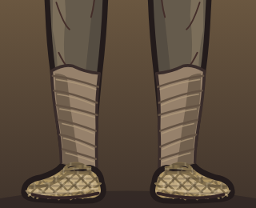
До и после
Находка из Московского Кремля; предмет отдельно не датирован. Раскопочная зона охватывает конец XIII–XVI века и не подтверждает ношение лаптей в Новгороде 1200–1250 годов.
Войлочная стелька
gm_fw013 32 × 32
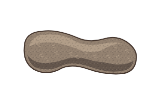
До и после
До После
После Находка из Ярославля, а не Новгорода; закрытый комплекс сооружения №110 датирован первой третью XIII века и связан с разорением города в 1238 году.
Игольновязаная шерстяная стелька
gm_fw014 32 × 32

До и после
Снимок показывает свалянную войлочную стельку, а не стельку, изготовленную игольным вязанием; точная техника игровой модели на изображении отсутствует.
Игольновязаный шерстяной носок
gm_fw015 32 × 32
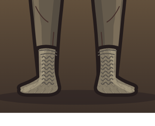
До и после
Находка англо-скандинавская, из Йорка, и существенно старше заданного периода; это не предмет из Руси.
Стопная онуча
gm_fw016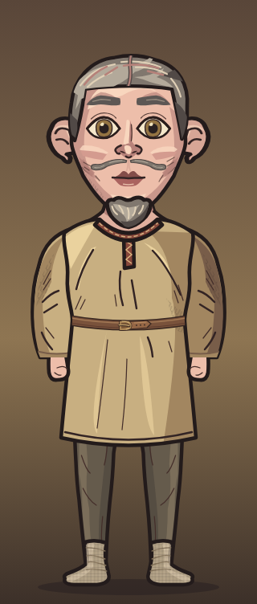
32 × 32
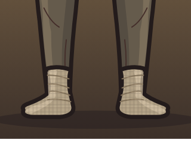
До и после
Изображена ткань, а не целая стопная обмотка; авторы предположительно считают её остатками онучей. Комплекс найден в Ярославле, а не в Новгороде.
Железный ледоходный шип
gm_fw018 32 × 32
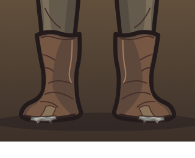
До и после
Это находка из Васильево 2 в Южном Заонежье, а не Новгорода; предметы датируются лишь широким интервалом X–XVI веков. Кожаные ремешки на рисунке не показаны.
Шпора, крепящаяся к обуви всадника
gm_fw020 32 × 32
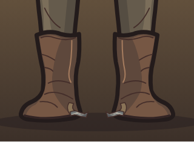
До и после
Музей датирует находку первой половиной XII века, то есть раньше целевого периода; фотография не показывает крепление к обуви.
Костяные коньки (пара)
it_ps_bone_skates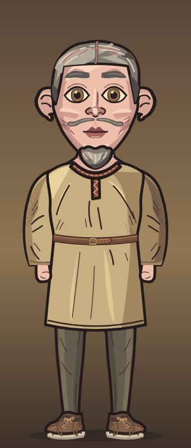
32 × 32
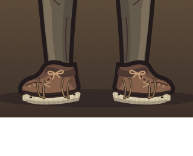
До и после
Новгородская музейная пара; отдельная дата не указана, X–XV вв. — интервал выставки.
Железные ледоходы (пара)
it_ps_ice_grips 32 × 32
До и после
Селище Васильево 2; датировка шипов указана широко, X–XVI вв. Иллюстрация показывает отдельные шипы без кожаных ремешков, а предметы 8–9 могут быть конским снаряжением.
сапоги
boots 32 × 32
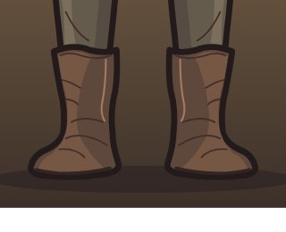
У исходного id культура и дата не заданы; на фото новгородская музейная пара начала XII века.
Поршни простого типа
gm_fw001 32 × 32
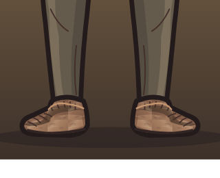
Музей подтверждает поршень, но не называет именно простой подтип; фрагмент и широкая датировка не дают точного кроя.
Мягкая низкая кожаная туфля
gm_fw002 32 × 32
Сохранились отдельные детали, не цельная низкая туфля; точный фасон генератора не идентифицирован.
Низкая туфля с боковой застёжкой/ремешком
gm_fw003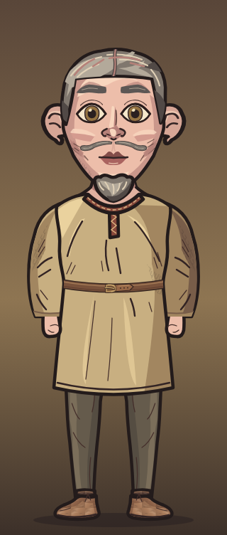
32 × 32
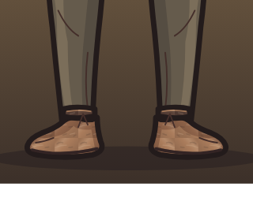
До и после
Артефакт подтверждает мягкий верх обуви, но боковая застёжка или ремешок на нём не видны.
Полуботинок до щиколотки
gm_fw004 32 × 32
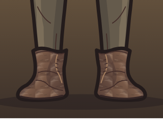
Фрагмент не сохраняет точную высоту голенища, поэтому вариант до щиколотки не подтверждён.
Ажурно украшенная кожаная туфля
gm_fw005 32 × 32
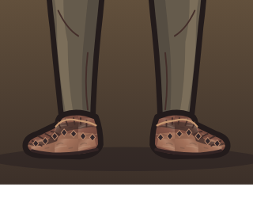
Найден фрагмент верха, а не целая туфля; широкая музейная датировка X–XV веков не выделяет 1200–1250 годы.
Разноцветно украшенная городская туфля
gm_fw006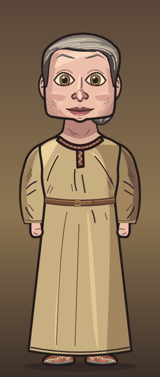
 32 × 32
32 × 32
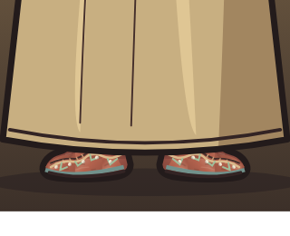
Цветная отделка и полная городская туфля на снимке не показаны; музей идентифицирует лишь кожаный фрагмент с резьбой и прошивкой.
Кожаный сапог до середины голени
gm_fw007 32 × 32
В рисунке показан сапог с более длинным голенищем; высота до середины голени не подтверждена.
Высокий охотничий сапог
gm_fw008 32 × 32
Рисунок не указывает охотничье назначение; дата находки внутри раздела не уточнена.
Женский сапог из погребения Юрьева монастыря
gm_fw009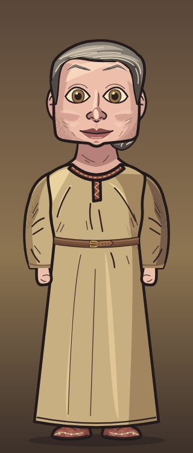
32 × 32
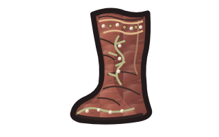
Иллюстрация не подтверждает женского носителя или погребение Юрьева монастыря; датировка образца шире и значительно раньше названной находки.
Детская мягкая кожаная туфля
gm_fw010 32 × 32
32 × 32
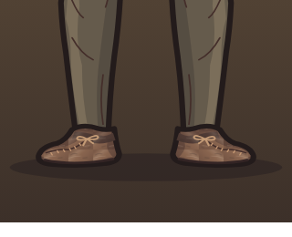
До и после
ДоПосле Детский вариант показан, но рисунок не подтверждает конкретно мягкую кожаную туфлю из целевого периода.
Детский кожаный сапог
gm_fw011 32 × 32
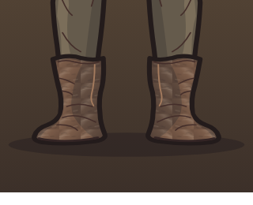
До и после
ДоПосле Показан низкий детский ботиночек, а не сапог с высоким голенищем; датировка образца ранняя.
Специальная погребальная кожаная обувь
gm_fw012 32 × 32
Изображена бытовая туфля, а не погребальная обувь; специальное назначение и отсутствие креплений здесь не показаны.
Защитные поршни поверх дорогой обуви
gm_fw017 32 × 32
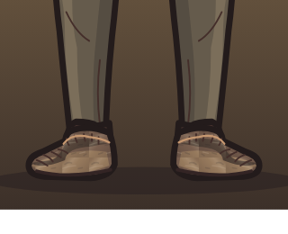
Не показано, что поршни надеты поверх дорогой обуви.
поршни
mocassins 32 × 32
Подпись относит изображённую обувь к новгородским находкам XII–XIII вв.; ID использует «mocassins» как аналог названия типа.